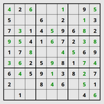
SudokuKlasik sudoku ve türevleri: Jigsaw, X, Killer.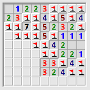
Mayın TarlasıAsla şansa kalmayan, mantıkla çözülen mayın tarlası.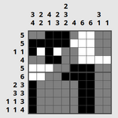
DesenNonogram: satır/sütun ipuçlarıyla gizli resmi çıkar.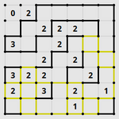
DöngüSayılara uyan tek kapalı döngüyü çiz (Slitherlink).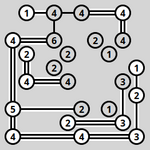
KöprülerAdaları doğru sayıda köprüyle birbirine bağla.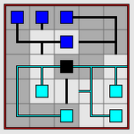
AğBoruları döndürüp tüm ağı merkeze bağla.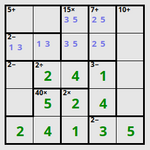
Keenİşlem kafesli Latin kare: aritmetik sudoku.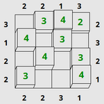
KulelerKenardaki ipuçlarına göre kule boylarını bul.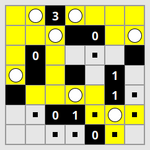
IşıklandırAmpulleri yerleştirip bütün odayı aydınlat.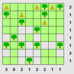
ÇadırlarHer ağacın yanına bir çadır kur, çadırlar değmesin.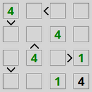
EşitsizlikBüyük/küçük işaretli Latin kare (Futoshiki).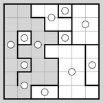
GalaksilerIzgarayı dönme simetrili galaksilere böl.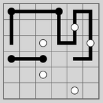
İnciSiyah ve beyaz incilerin kurallarına uyan döngü.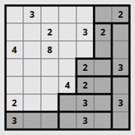
DikdörtgenlerIzgarayı sayılara uygun dikdörtgenlere ayır.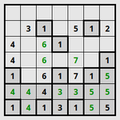
DoldurmaHer bölge içindeki sayı kadar kareden oluşsun.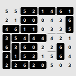
DominosaSayı ızgarasını eksiksiz domino setine böl.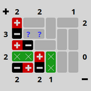
MıknatıslarMıknatısları kutup ve sayı kurallarıyla diz.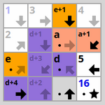
TabelaOkları izleyerek 1'den sona kadar yol kur.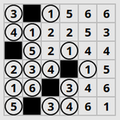
TeklerTekrarlanan sayıları karart, beyazlar bağlı kalsın.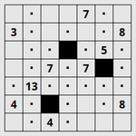
MenzilSiyah kareleri koy, görüş mesafeleri tutsun.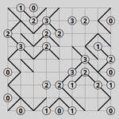
EğikKöşegenlerle döngüsüz bir labirent kur.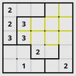
ÇitIzgarayı eşit büyüklükte parçalara böl.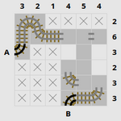
Raylarİpuçlarına uyan kesintisiz tren yolunu döşe.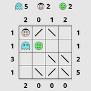
HortlaklarAynalı evde hayalet, vampir ve zombileri bul.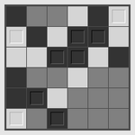
KuralsızSiyah-beyaz dengesi: üç aynı renk yan yana gelmesin.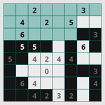
MozaikSayılar komşu boyalı kare sayısını gösterir.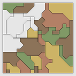
HaritaHaritayı dört renkle, komşular farklı olacak şekilde boya.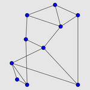
ÇözNoktaları taşıyıp hiçbir çizgi kesişmesin.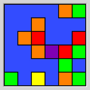
SelKöşeden başlayıp tahtayı az hamlede tek renge boya.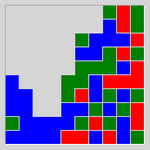
Aynı RenkAynı renkli grupları patlat, tahtayı temizle.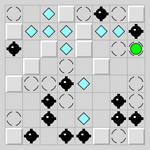
EylemsizlikDurmadan kayarak tüm mücevherleri topla.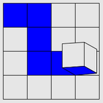
KüpKüpü yuvarlayıp mavi kareleri üstüne topla.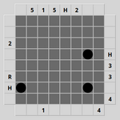
Kara KutuIşın göndererek kutudaki gizli topları bul.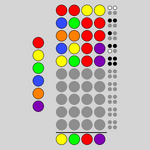
TahminGizli renk dizisini en az denemede çöz.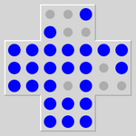
ÇivilerÇivileri zıplatıp tahtada tek çivi bırak.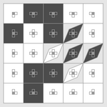
ÇevirKareleri çevirerek hepsini aynı renge getir.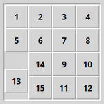
On BeşKlasik kayan sayı bulmacası.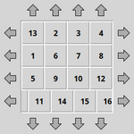
On AltıSatır ve sütunları kaydırarak sırala.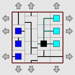
Kaydırmalı AğSatırları kaydırarak boru ağını tamamla.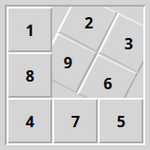
ÇevirmeceBlok gruplarını döndürerek sayıları sırala.